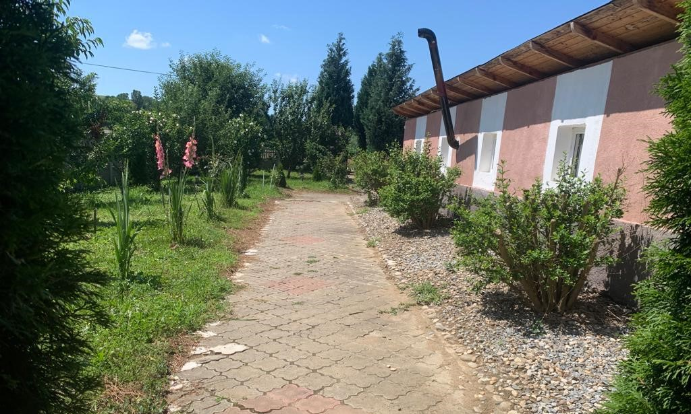

Bine ați venit la Pensiunea Aliadi
Confort și relaxare la poalele munților, în mijlocul naturii.



Confort și relaxare la poalele munților, în mijlocul naturii.
Pensiunea Aliadi este situată în Bucium, Hunedoara, la doar 9 km de Costești, în mijlocul naturii, oferind o experiență confortabilă și relaxantă.